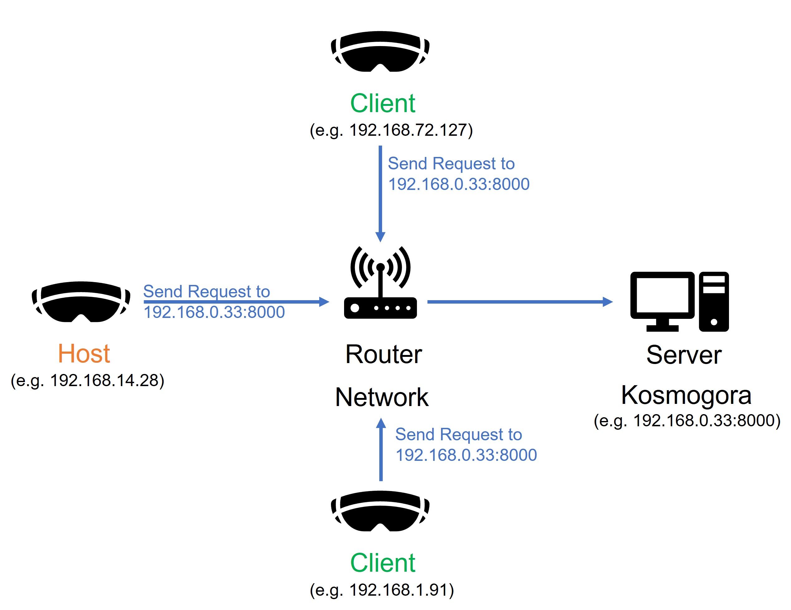

Multiplayer
Currently, multiplayer through the Internet is not supported. Threfore, to experience, multiplayer all users must be on the same Local Area Network (LAN). It should be possible to connect through VPNs is the settings are right, but this is untested. The current architecture of the multiplayer scheme relies on a host/client idiom. This means that one player will create and instance of the multiplayer network on his device (hence, host it) and other players will join this session. We advise not to go beyond 4 players at the same time because the host/client architecture puts additional burden on the hosts's device. So, A possible setup is the following:

All users are connected to the network with addresses 192.168.14.28, 192.168.72.127, and 192.168.1.191. Players can use the Multiplayer Menu to manage the host and client sessions. In the schematic above, it is the the user at 192.168.14.28 that decides to host the session at his address under the port 7777. Once the session is created, other users can join by inputting the target IP(v4) address of the host as well as the port.
Once all users are connected to the host, they can all query the instance of a Kosmogora server as they would do in the single player scheme. In particular, when a user imports data from the server, it is synchronised between all of them and they can dive into it together.